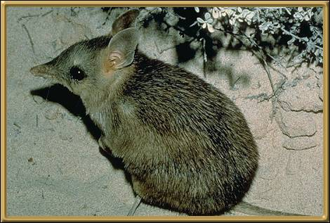

The islands in Shark Bay, Western Australia, are the only habitat left for this little animal which once roamed over much of the southern half of Australia. Noted for the two or three alternating paler and darker bars across the hindquarters. Large, erect ears, and a shorter tail than its desert cousin, this little creature usually spends its days in a well concealed nest. Its current status is vulnerable.
Photographer: Unknown